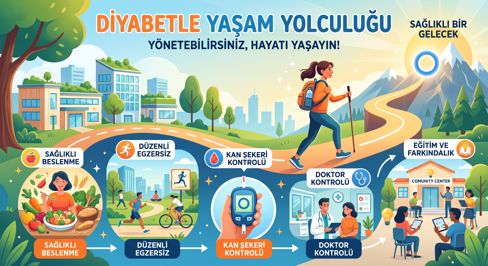
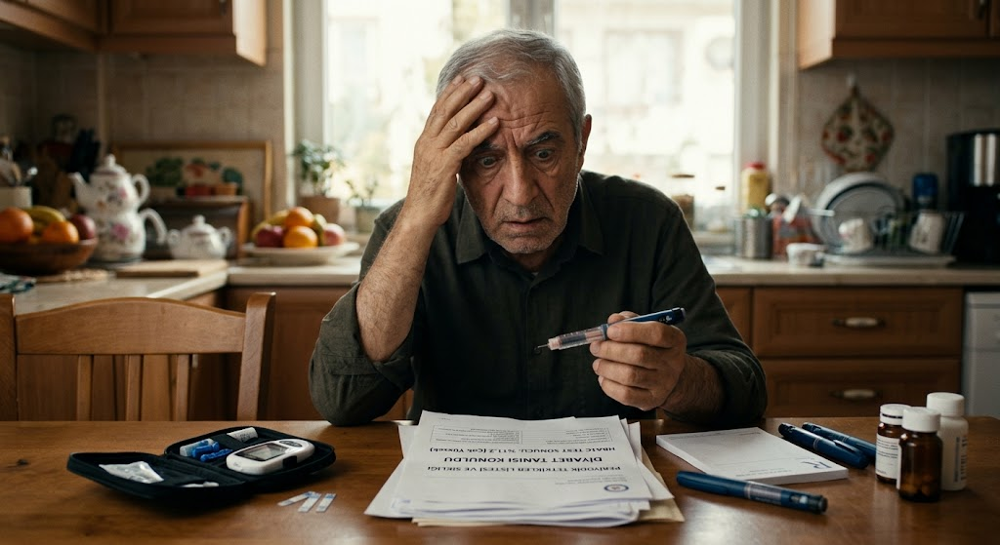
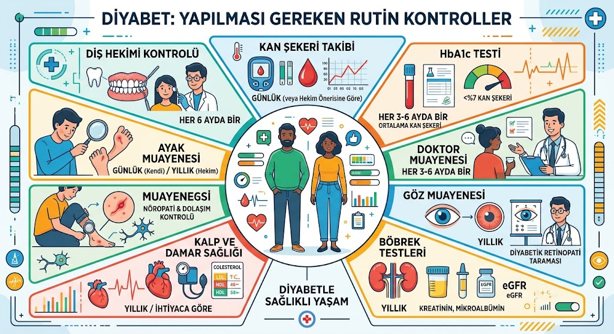
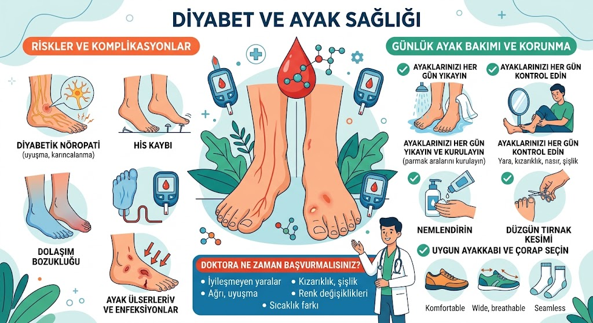
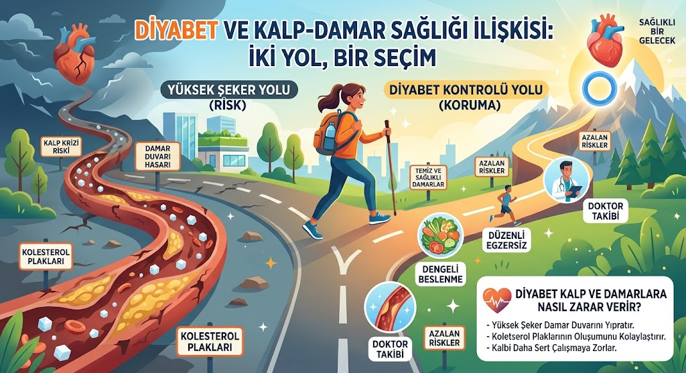
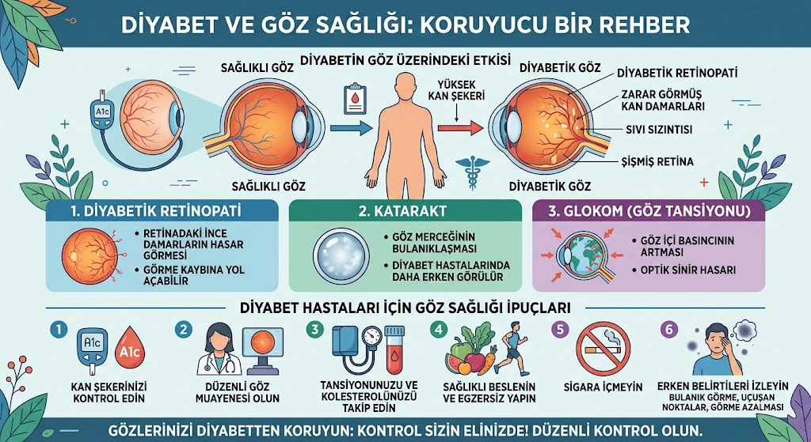

Diyabet (Şeker Hastalığı) Rehberi
Sağlığınızı korumak için bilmeniz gereken kritik noktaları kaydırarak okuyabilirsiniz.

Diyabet yani şeker hastalığı sadece kan şekerinin yüksek olması değildir. Kan şekerinin yüksek seyretmesi ve şeker hastalığı vücudumuzdaki çok sayıda organı olumsuz etkiler. Örneğin gözlerimiz, böbreklerimiz, kalp ve damar sağlığımız şeker hastalığından olumsuz etkilenir.
Şeker hastası olan kişiler kalp ve damar hastalıkları açısından yüksek risk altındadır. Şeker hastalığına ek olarak yüksek tansiyon ve obezite de kalp ve damar sağlığını olumsuz etkiler. Bir şeker hastasını tedavi ederken amacımız tek başına şekeri normale getirmek değil aynı zamanda hastanın hayati organlarını ve kalp-damar sağlığını korumaktır.

Soru: Yeni şeker hastalığı tanısı konuldu. İlaçlarımı kullanıyorum. Ne yapmalıyım?
Öncelikle 3 aylık kan şekerinize hekiminizin önerisine göre 3-6 aylık aralıklarla baktırmalısınız. Eğer şeker düzeyleri kötü seyrediyorsa bu süre 3 ay ama her şey yolunda ise en fazla 6 ay olmalıdır. 3 aydan daha sık aralıklarla 3 aylık kan şekerinize baktırmanın bir yararı olmaz. Ayrıca bazı kan tetkiklerinizi yılda 1 kez yaptırmalısınız.

Soru: Hangi tetkikleri, hangi sıklıkta ve nerede yaptırabilirim?
Yılda 1 kez kolesterol düzeyinize ve böbrek fonksiyonlarınıza aile hekimliğinde baktırabilirsiniz. Ayrıca böbreklerinizin durumunu anlamak için yılda bir kez detaylı bir idrar testi yaptırmalısınız. Bu test ise hastanelerde uygulanmaktadır. Yine yılda 1 kez bir kardiyoloji ve göz hastalıkları muayenesinden geçmenizi öneririz. En başta söylediğimiz gibi şeker hastaları, kalp ve damar hastalıkları yönünden yüksek riskli sayılırlar. Bunun dışında şeker hastalığı göz dibinde kanamalara hatta körlüğe neden olabilir. Bu nedenle yılda 1 kez göz doktoru muayenesi önerilir.

Soru: Şeker hastalarının yaraları daha zor iyileşiyormuş. Doğru mu?
Evet. Şeker hastalarının bağışıklık sistemleri zayıflar. Yara iyileşmesi gecikir ve yaralarda iltihap oluşma riski artar. Özellikle ayaklarımız bu durumda daha çok etkilenir. Şeker hastaları ayak bakımlarına dikkat etmelidir. Örneğin ayak parmak aralarınızda ya da tırnaklarınızda mantar varsa öncelikle aile hekimine başvurun.
Bunun dışında edinmeniz gereken bazı alışkanlıklar var. Ayaklarınız ıslak ya da terli ise mutlaka parmak araları ve topuklar dahil iyice kurulayın. Önü açık ya da parmak arası terlik değil önü kapalı terlikleri tercih edin. Her gün ayakkabınızı ya da terliğinizi giyerken içinde kum, taş, çivi gibi yaralayıcı bir cisim olup olmadığını elle ve gözle kontrol edin çünkü şeker hastaları ağrıyı daha az hissederler. Her akşam ayakkabı ve çoraplarınızı çıkardıktan sonra ayaklarınızı parmak araları ve topuklar da dahil olmak üzere iyice kontrol edin. Herhangi bir yara, çatlak görmeniz durumunda bu yara ufak da olsa aile hekiminize başvurun ve şeker hastası olduğunuzu hatırlatın.


Soru: Bir şeker hastası kalp ve damar sağlığını korumak için daha neler yapabilir?
Kilonuzu kontrol altında tutmalı karbonhidratı kısıtlamalısınız. Bir diyetisyene başvurun ve diyet önerilerine mutlaka uyun. Eğer isterseniz aile hekiminiz sizi diyetisyene yönlendirebilir. Ayrıca haftanın 5 günü ve günde yarım saat tempolu yürüyüş egzersiz olarak yeterli gelecektir. Ayrıca sigara tek başına kalp ve damar hastalıkları riskini artırır. Şeker hastalarının sigara kullanması da riski daha da çok artırır.